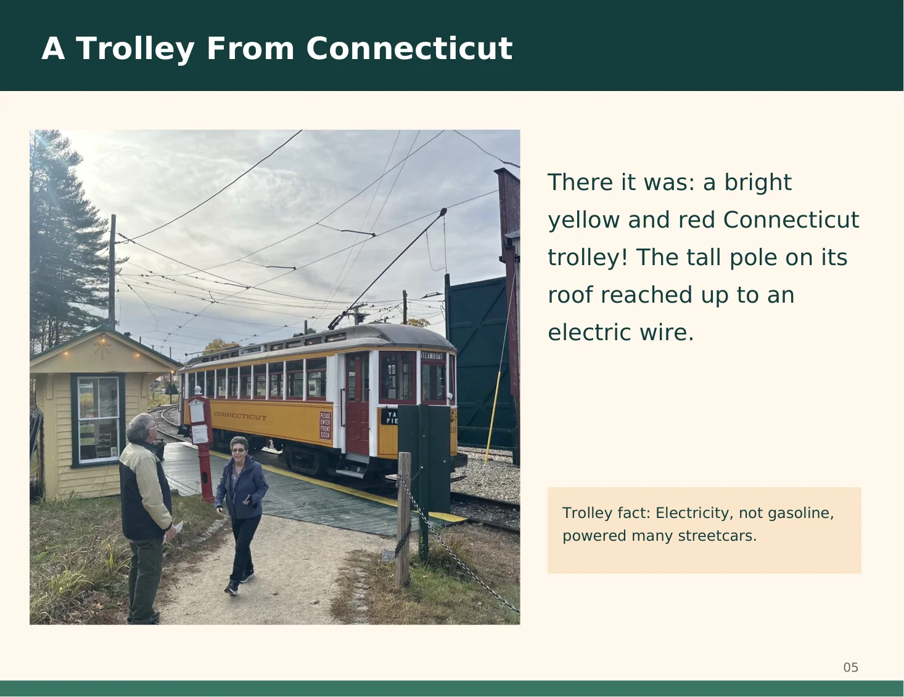
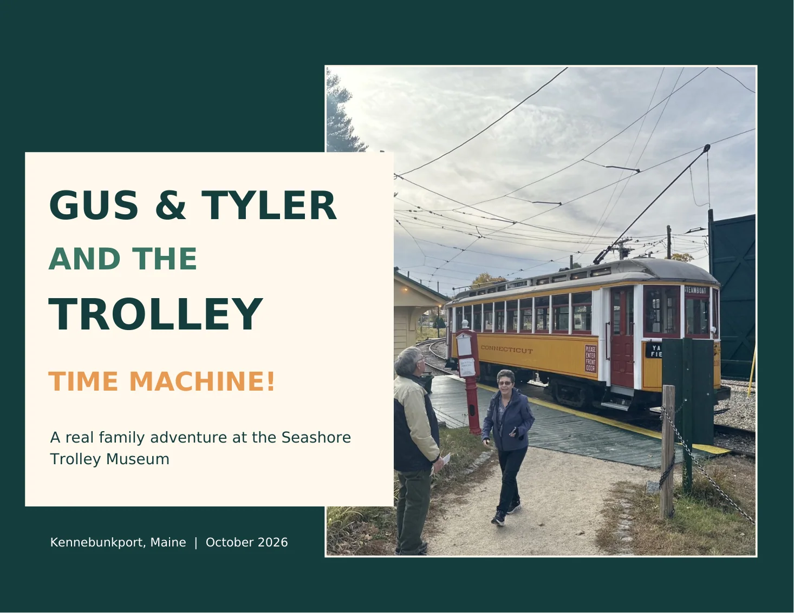

All aboard! Turn the pages to follow Gus and Tyler from a hundred-year-old Connecticut trolley to a giant restoration workshop, tiny model towns, and a very special scavenger-hunt victory. Along the way, open 11 new time-travel stories filled with the real history you learned on your visit.

From the family scrapbook:
CoverPage 1 of 28
Read this page as text
Historical sources and the guide's stories
The history stops draw primarily on Seashore Trolley Museum's official collection records, the National Park Service, and photographs taken during this family visit. The dairy-farmer story at Gregoire's Crossing was shared on the tour but has not been independently documented.